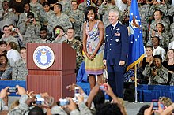

Michelle Obama as First Lady
During her early months as First Lady, Obama visited homeless shelters and soup kitchens. She also sent representatives to schools and advocated public service. Obama advocated for her husband's policy priorities by promoting bills that support it. She hosted a White House reception for women's rights advocates in celebration of the enactment of the Lilly Ledbetter Fair Pay Act of 2009 Pay equity law. She supported the economic stimulus bill in visits to the United States Department of Housing and Urban Development and United States Department of Education. Some observers looked favorably upon her legislative activities, while others said she should be less involved in politics. According to her representatives, she intended to visit all United States Cabinet-level agencies in order to get acquainted with Washington. Obama and General Charles R. Davis smile to the crowd before speaking on her mission to help military families, October 2009. On June 5, 2009, the White House announced that Michelle Obama was replacing her then chief of staff, Jackie Norris, with Susan Sher, a longtime friend and adviser. Norris became a senior adviser to the Corporation for National and Community Service. Another key aide, Spelman College alumna Kristen Jarvis, served from 2008 until 2015, when she left to become chief of staff to the Ford Foundation president Darren Walker. In 2009, Obama was named Barbara Walters' Most Fascinating Person of the year. In her memoir, Becoming, Obama describes her four primary initiatives as First Lady: Let's Move!, Reach Higher, Let Girls Learn, and Joining Forces. Some initiatives of First Lady Michelle Obama included advocating on behalf of military families, helping working women balance career and family, encouraging national service, and promoting the arts and arts education. Obama made supporting military families and spouses a personal mission and increasingly bonded with military families. According to her aides, stories of the sacrifice these families make moved her to tears. In April 2012, Obama and her husband were awarded the Jerald Washington Memorial Founders' Award by the National Coalition for Homeless Veterans (NCHV). The award is the highest honor given to homeless veteran advocates. Obama was again honored with the award in May 2015, accepting with Jill Biden. In November 2013, a Politico article by Michelle Cottle accusing Obama of being a "feminist nightmare" for not using her position and education to advocate for women's issues was sharply criticized across the political spectrum. Cottle quoted Linda Hirshman saying of Obama's trendy styles, promotion of gardening and healthy eating, and support of military families that "She essentially became the English lady of the manor, Tory Party, circa 1830s." A prominent critic of Cottle was MSNBC host Melissa Harris-Perry, who rhetorically asked "Are you serious?" Supporters of Obama note that the first lady had been one of the only people in the administration to address obesity, through promoting good eating habits, which is one of the leading U.S. public health crises. In May 2014, Obama joined the campaign to bring back school girls who had been kidnapped in Nigeria. The first lady tweeted a picture of herself holding a poster with the #bringbackourgirls campaign hashtag. Obama writes in her book about enlisting help for her initiative Let Girls Learn to produce and sing the song "This is for My Girls". Over the course of the Obama presidency, particularly during the second term, Michelle Obama was subject to speculation over whether she would run for the presidency herself, similarly to predecessor Hillary Clinton. A May 2015 Rasmussen poll found Obama had 22% of support to Clinton's 56% of winning the Democratic nomination, higher than that of potential candidates Elizabeth Warren, Martin O'Malley and Bernie Sanders. Another poll that month found that 71% of Americans believed Obama should not run for the presidency, only 14% approving. On January 14, 2016, during a town-hall meeting, President Obama was asked if the first lady could be talked into running. He responded, "There are three things that are certain in life: death, taxes, and Michelle is not running for president. That I can tell you." On March 16, 2016, while speaking in Austin, Texas, Obama denied that she would ever run for the office, citing a desire to "impact as many people as possible in an unbiased way". In the epilogue to Becoming, Obama writes, "I have no intention of running for office, ever," recognizing that "politics can be a means for positive change, but this arena is just not for me.